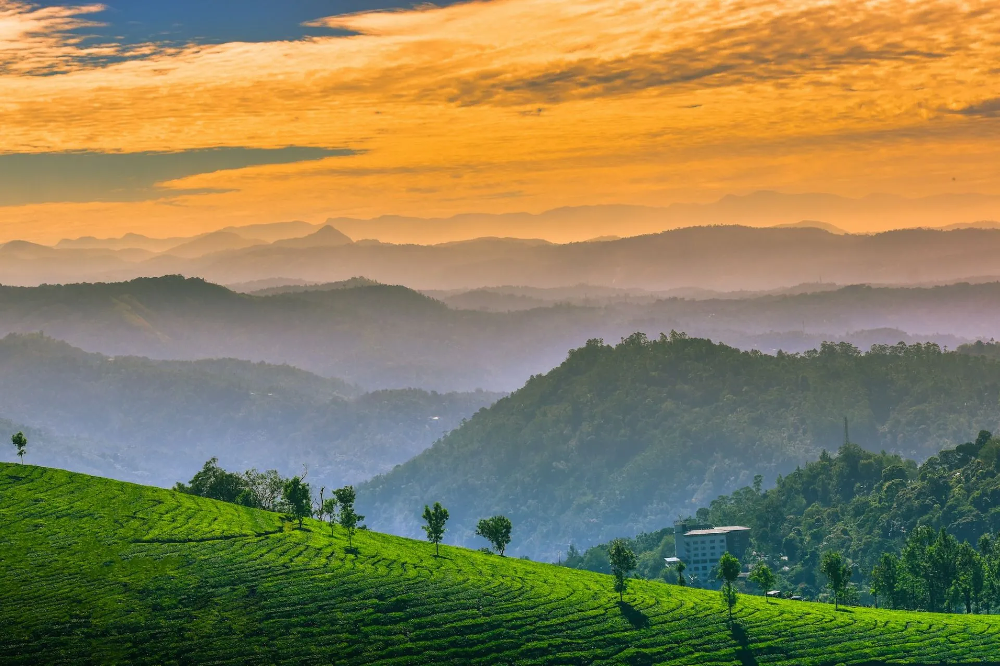
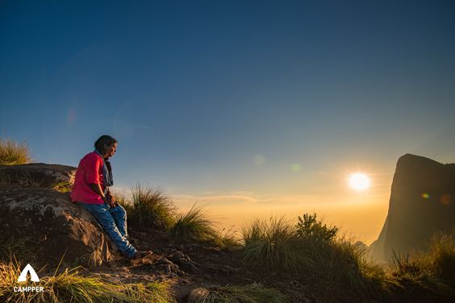
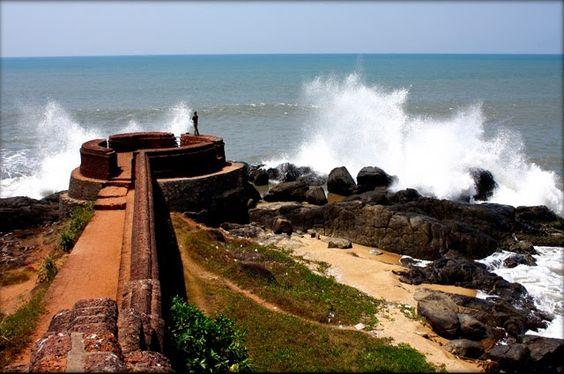
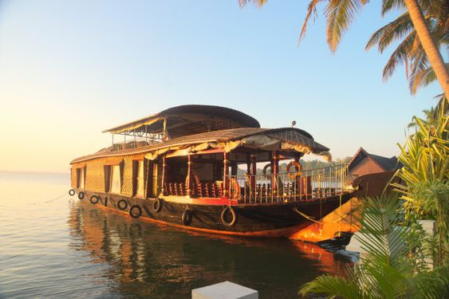

Munnar

Munnar is a town in the Western Ghats mountain range in India’s Kerala state. A hill station and former resort for the British Raj elite, it's surrounded by rolling hills dotted with tea plantations established in the late 19th century. Eravikulam National Park, a habitat for the endangered mountain goat Nilgiri tahr, is home to the Lakkam Waterfalls, hiking trails and 2,695m-tall Anamudi
Kolukkumalai

Kolukkumalai is a small village/hamlet in Bodinayakanur Taluk in the Theni district of the Indian state of Tamil Nadu. It is home to the highest tea plantation in the world with the tea grown here possessing a special flavour and freshness because of the high altitude.
Bekal Fort

Bekal Fort is a medieval fort built by Shivappa Nayaka of Keladi in 1650 AD, at Bekal. It is the largest fort in Kerala, spreading over 40 acres

Kumarakom
Kumarakom is a village on Vembanad Lake in the backwaters of Kerala, southern India. It’s laced with canals, where houseboats ply the waters. Kumarakom Bird Sanctuary is home to many species including cuckoos and Siberian storks. Nearby, the Bay Island Driftwood Museum displays wooden sculptures. In the lake, Pathiramanal Island is a haven for rare migratory birds. Ancient Thazhathangady Mosque is east of Kumarakom.